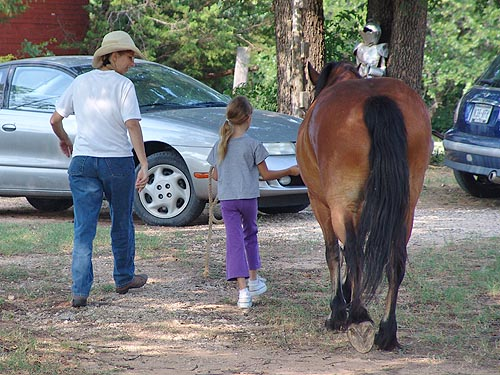

Amanda riding Thuy My neice had recently been asking about
riding.
She's 8. We tried it a few years back,
but it didn't hold
her interest enough. This time she followed
directions, and
once she'd figured out go, whoa and turn,
there was no stopping her.
I kept her at a walk this first time,
but a couple of days later she
was happily trotting Thuy around.
He's too big for her, but they're working
well together.
Explaining how to lead.

Thuy isn't always the best at leading
(grass is very tempting), but he was good for Amanda.
Thuy likes kids, but doesn't like
his face touched.
He can be tolerant when he has to be.
Using the mounting block, Amanda could
just reach to get on by herself.
Thuy and Amanda were very comfortable
with each other.
Explaining how to hold the reins.
We spent some time in the yard with
her learning whoa and go.
She was happy when she learned she
was in control.
I must say that Thuy carries himself
nicely, no matter the size of his rider.
A nice whoa and posing for the camera.
Heading off onto the trails.
They stays close to the person on
the ground, unless he's made to leave them.
When we'd stop out in the field, Thuy'd
push his head down and pull the reins out of Amanda's hands. After the
first time losing them, she learned to let them slip, but not let go, so
she could gather them back up again quickly. We both agreed that if she
didn't let them slip, he could pull her over his head.
He's not trying to eat grass, but has
gotten a bit forceful about having his head when he's standing still.
It's tough to not keep looking back.
But watching her ride away from me by herself wasn't any easier.
Watching for her head in the trees.
She was great about steering around obstacles and going around branches.
That's something the horse can't do for you.
A few circles to be sure he was listening.
I found some breeches (too big, but
better than nothing) and we'll work on getting some proper boots. She swims
in the saddle, but no rub marks and she said she was comfortable.
Riding around by herself with a proud
grandfather watching.
And posing with Aunt Jennifer and
the grandmother.
By her second ride, she and Thuy were
trotting around the hay bales.